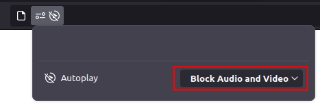

Enable Audio on Firefox
Click this icon next to the URL:
Click "Block Audio and Video" and a drop-down menu should appear. Click "Unblock Audio and Video" (or just audio if you prefer!)
Press F5 to refresh, you should hear music on this page!
Back